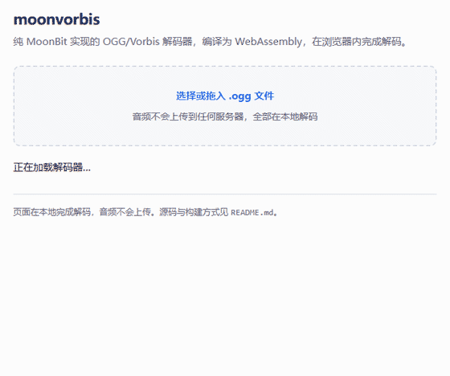

从字节流到 PCM，
全部由 MoonBit 完成
moonvorbis 是一个完整的 OGG/Vorbis 音频解码器。它不链接 libvorbis、 libogg 或任何系统编解码器，容器解析、熵解码、IMDCT 与重叠相加都在 MoonBit 里实现，也能编译成 WebAssembly 在浏览器内直接解码。

sample.ogg、解码并画出波形。
这段动画由 tools/make_demo_gif.py 对
demo/record.html 逐帧截图合成，波形与元信息都来自真实
解码结果，不含预置画面。
实现范围
Vorbis I 解码通路上 floor 的两种形式、residue 的三种形式、codebook 的三种 lookup 全部走通。
OGG 容器
页解析、segment table 重组、CRC-32 校验、跨页 packet 组装，并按 granule position 裁剪输出。
Codebook
Huffman 解码，VQ lookup type 1 / 2，sequence_p
累加，ordered 与 sparse 两种码长编码。
Floor 0 与 Floor 1
floor 1 的关键点插值，floor 0 的 LSP 系数与幅度按 Bark 刻度还原增益曲线。
Residue 0 / 1 / 2
三种类型齐全，含 type 2 的多声道交错 VQ——真实立体声文件走的正是 这条路径。
立体声耦合
magnitude / angle 反变换，由耦合声道还原出左右声道。
IMDCT 与重叠相加
含长短块切换，窗函数与块边界按规范处理。
WAV 输出
多声道 16-bit PCM，命令行与 wasm 共用同一条解码路径。
WebAssembly
导出 decode_ogg_base64，浏览器里本地解码，音频不上传。
怎么知道它解对了
单元测试只能证明「实现与自己的理解自洽」。真正提供独立性的是第二个 实现——所有素材都同时交给 moonvorbis 和 libvorbis，两边一致才算读对。
真实文件覆盖不到的分支得自己造素材：tools/vorbisgen.py
按规范直接拼比特流，覆盖 granule 裁剪、residue 各类型与
sequence_p、floor 0 的奇数阶与偶数阶。排查过程写在
《当 52 个测试全绿，却解不出一段正弦波》里——那里记了七处规范偏差与一处流程陷阱，也包括一处把错误结论写进
文档、后来又被真实文件推翻的经过。
快速开始
需要 MoonBit 工具链。本机没有 C 编译器也能跑，走 wasm-gc 后端即可。
git clone https://github.com/LL728/moonvorbis
cd moonvorbis
moon run cmd/main --target wasm-gc -- input.ogg output.wav
省略输出路径时写入 input.ogg.wav。要在浏览器里跑，重新
构建 wasm 后起一个静态服务器：
moon build --target wasm-gc --release
cp _build/wasm-gc/release/build/moonvorbis.wasm demo/
python -m http.server
# 打开 http://localhost:8000/demo/浏览器需要支持 WebAssembly JS String Builtins：Chrome / Edge 130+、 Firefox 134+，Safari 目前不支持。
代码结构
解码按 Vorbis I 规范的分层组织，每一层单独成文件。
| 文件 | 职责 |
|---|---|
bitreader.mbt | LSB-first 位读取器，带越界检查 |
ogg_crc.mbt | OGG 页校验用的 CRC-32 |
ogg_page.mbt | 页头解析与校验 |
ogg_packet.mbt | 跨页 packet 组装 |
vorbis_info.mbt | identification 头 |
vorbis_comment.mbt | comment 头 |
vorbis_setup.mbt | setup 头，聚合下列子结构 |
codebook.mbt | codebook 与 Huffman/VQ 解码 |
floor0.mbt / floor1.mbt | 两种 floor 的解码与合成 |
residue.mbt | residue 配置与解码 |
mapping.mbt | channel mapping 与耦合 |
mdct.mbt / window.mbt | IMDCT 与窗函数 |
decoder.mbt | 解码主循环 |
vorbis_stream.mbt | 高层编排：字节流 → PCM |
wav.mbt | WAV 序列化 |
wasm_api.mbt | WASM 导出接口 |
tools/ | 交叉验证脚本与素材生成器 |
demo/ | 浏览器演示页与冒烟测试 |
限制
只做解码，不做编码。第三方依赖只有 moonbitlang/x 的
fs，且只被命令行入口用来读写文件——解码库本身不依赖它，
wasm 产物除引擎内置外没有任何导入。Safari 尚不支持所需的 wasm
字符串内置。